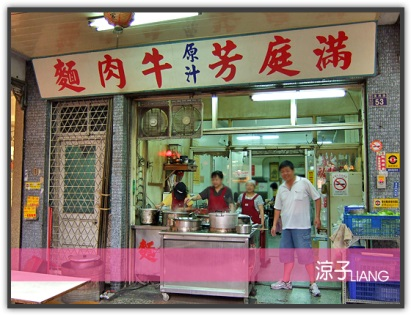
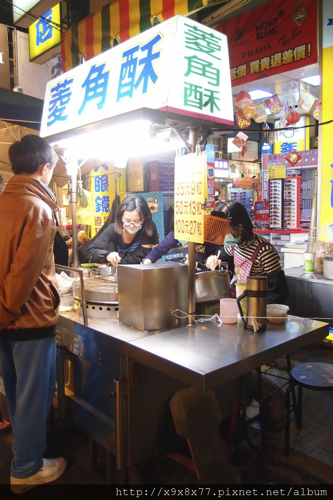
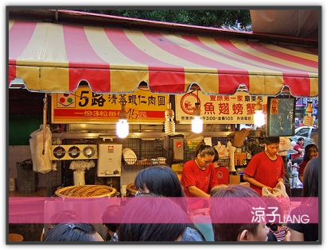

台式料理

滿庭芳牛肉麵
它們家的牛肉是半筋半肉的，所以口感還不錯，而牛肉麵的湯也很濃郁，但是……我覺得不夠香耶，少了一股牛肉麵該有的香味，雖然吃得出牛肉湯是真材實料熬製的，可是就是覺得少了股香味。

菱角酥
每顆菱角酥都炸的金黃，光外表就很好吃的模樣，外皮有蛋糕的奶香味，而裡頭是紮實的菱角顆粒，合起來一起吃滋味超正，連菱角吃起來都有芋頭的香甜。

5路清蒸蝦仁肉圓
不規則形狀的外皮軟嫩又保有口感，每粒肉圓的蝦仁數量，就是擺在外頭的那一個，內餡完全是豬肉餡，不過調味也滿不賴的，好吃！